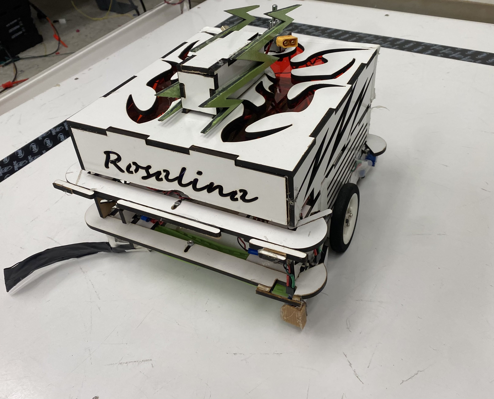

The autonomous ball-collecting robot implemented for the ECE-118 Mechatronics course
Overview
Under the guidance of Professor Gabriel Hugh Elkaim, our team, including Ana Elizabeth Villa
and Rafael Delwart, developed an autonomous robot as part of the final lab in Mechatronics
(ECE-118). Tasked with navigating a game field, the robot locates, traps, and deposits 25mm
chrome balls either within itself or onto the opponent's field. Our design, "The Roller,"
utilized tape sensors and bumpers for navigation and employed an efficient ball collection
mechanism to meet the challenge of collecting and depositing at least 30 balls within a
two-minute round. This project showcased a blend of mechanical design, electrical system
integration, and software strategy, culminating in a successful demonstration at the final
competition.